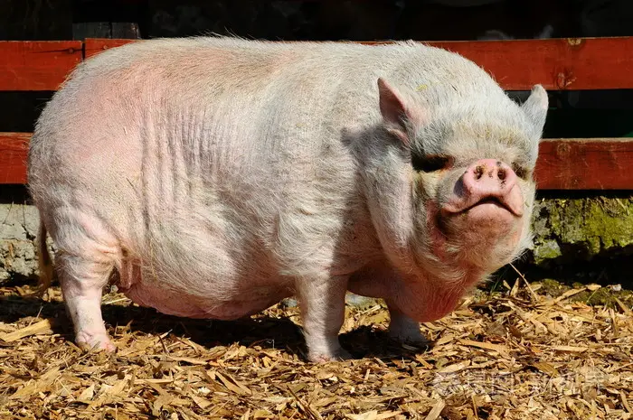

欧阳莉简介
当前人们认为猪是猪科动物的简称，猪依据品种的不同，体貌特征也各不相同；通常以耳大，头长，四肢短小，鼻直，身体肥壮，腰背窄为主要形体特征。毛发较粗硬，毛皮颜色通常为白色、粉色、黑色、棕色和花色。>猪（Pig、Swine）是一种脊椎动物、哺乳动物、家畜，也是古杂食类哺乳动物，主要分为家猪和野猪。当前人们认为猪是猪科动物的简称，猪依据品种的不同，体貌特征也各不相同；通常以耳大，头长，四肢短小，鼻直，身体肥壮，腰背窄为主要形体特征。毛发较粗硬，毛皮颜色通常为白色、粉色、黑色、棕色和花色。
伴随着比较紧凑又略显紧张的工作节奏，20_年就这样快接近尾声，虽然我来公司时间还不太长，但是时间的脚步依然没有放慢它前行的脚步，经过这一段时间的工作，有很多所感所悟，现将一年的工作总结如下：